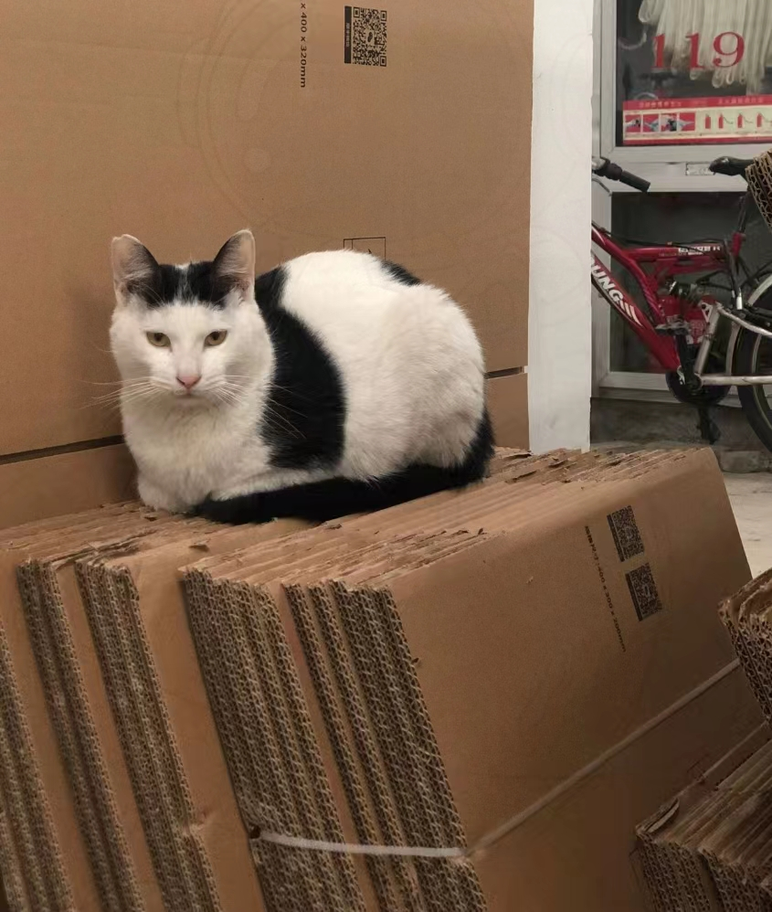

阿花
性别：母 已绝育 失踪
当之无愧的校花，毕竟没有哪只猫的靓照可以永远挂在学校官方公众号上，生下一窝五只崽很不容易，非常亲人，也许是被垂暮以久的两脚兽带走啦，樱花树下的阿花定格在大家的脑海里，希望她于一处安居过的平和快乐。

奶牛
性别：母 已绝育 失踪
奶牛于2020年1月于89车库失踪，如果有她任何消息的朋友可以联系我们suibecats@163.com，我们想知道她是否安好。
黑豆
性别：公 已绝育 失踪
傻里傻气的黑豆，饮食规律，性格温顺，是话痨的淘气千儿子，是小小白的贴心大哥哥，不护食，给啥吃啥。
阿黄黄
性别：公 已绝育
失踪
阳光下的阿黄黄就是完美的橘猫。叫声嗲嗲的。但患了恶病质后开始暴瘦，在医院治疗大半年后恢复放归，开始变的亲人了。2020年12月后不知道去哪里讨生活了。
三花咪
性别：母 已绝育 失踪
风靡三期的漂亮女猫。绝育前貌美如花，引来无数男喵为其倾倒。绝育后虽有发福，但风韵犹存，仍旧是男喵心中的女神。
小三花
性别：母 已绝育 失踪
大咪的不知道第几任老婆，是个可爱的小美女，叫声嗲嗲的小馋猫，睡觉还会吐舌头，不知道梦里有什么好吃的呢^人
肉松
性别：公 已绝育 失踪
上外贸为数不多的长毛猫之一，可亲可撸，因外表俊秀，当选猫届校草，从此过上了众妹妹投喂的幸福生活，性格也很好，谁到他那儿都能蹭上一口饭，妥妥的猫德学院模范猫代表。
卷王
性别：公 已绝育 失踪
这就是卷王，哪怕是冬天找个暖和地方，也要进图书馆跟大家一!起!学!习!期末考试，卷王给了我一个理由让我爱你。小道消息现在貌似转学去华政读法去了
橘三
性别：母 未绝育 失踪
呜呜和怕怕养大的三只小橘中体型最小的小橘子，叫声很奶，经常被另外两个欺负。目前不知道被哪个公猫祸害了，已经产下了三个小宝宝。